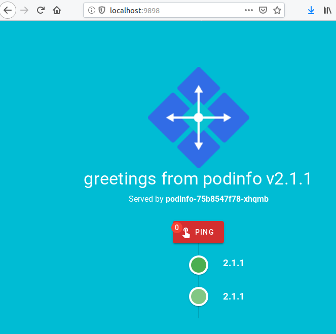

Setup your cluster with gitops¶
Welcome to eksctl gitops Quick Starts. In this guide we will show you
how to launch fully-configured Kubernetes clusters that are ready to
run production workloads in minutes: easy for you to get started running
Kubernetes on EKS and to launch standard clusters in your organisation.
At the end of this, you will have a Kubernetes cluster including control plane, worker nodes, and all of the software needed for code deployment, monitoring, and logging.
Quick Start to gitops¶
gitops is a way to do Kubernetes application delivery. It works by using Git as a single source of truth for Kubernetes resources and everything else. With Git at the center of your delivery pipelines, you and your team can make pull requests to accelerate and simplify application deployments and operations tasks to Kubernetes.
Using gitops Quick Starts will get you set up in next to no time. You will benefit from a setup that is based on the experience of companies who run workloads at scale.
Prerequisites¶
To use EKS, you need to have your AWS account set up.
Next, you will have to have the following tools installed:
- AWS CLI: at least
1.16.156- older versions will require AWS IAM Authenticator to be installed too - a specific version of kubectl which works with EKS
Getting ready for gitops¶
The main point of gitops is to keep everything (config, alerts, dashboards, apps, literally everything) in Git and use it as a single source of truth. To keep your cluster configuration in Git, please go ahead and create an empty repository. On GitHub, for example, follow these steps.
Standing up your cluster¶
First we follow the usual steps to stand up a cluster on EKS. Please review the list of flags to see if you need to tweak it for your purposes. In essence it is going to be a variation of:
1 | eksctl create cluster |
Once it is finished, you should be able to check the cluster contents and see some system workloads:
1 2 3 4 | $ kubectl get nodes NAME STATUS ROLES AGE VERSION ip-192-168-15-6.eu-central-1.compute.internal Ready <none> 39s v1.13.8-eks-cd3eb0 ip-192-168-64-189.eu-central-1.compute.internal Ready <none> 38s v1.13.8-eks-cd3eb0 |
1 2 3 4 5 6 7 8 | $ kubectl get pods --all-namespaces NAMESPACE NAME READY STATUS RESTARTS AGE kube-system aws-node-l8mk7 1/1 Running 0 45s kube-system aws-node-s2p2c 1/1 Running 0 45s kube-system coredns-7d7755744b-f88w7 1/1 Running 0 45s kube-system coredns-7d7755744b-qgc6r 1/1 Running 0 45s kube-system kube-proxy-kg57w 1/1 Running 0 45s kube-system kube-proxy-qzcmk 1/1 Running 0 45s |
Enabling a gitops operator¶
The following command will set up your cluster with:
and add their manifests to Git, so you can configure them through pull requests.
The most important ingredient using eksctl enable repo is your config
repository (which will include your workload manifests, etc). You can start
with an empty repository and push that to Git, or use the one you intend to
deploy to the cluster.


Warning
This is an experimental feature. To enable it, set the environment variable EKSCTL_EXPERIMENTAL=true.
Experimental features are not stable and their command name and flags may change.
Run this command from any directory in your file system. eksctl will clone
your repository in a temporary directory that will be removed later.
1 2 3 4 5 6 | EKSCTL_EXPERIMENTAL=true \ eksctl enable repo \ --git-url git@github.com:example/my-eks-config \ --git-email your@email.com \ --cluster your-cluster-name \ --region your-cluster-region |
Let us go through the specified arguments one by one:
--git-url: this points to a Git URL where the configuration for your cluster will be stored. This will contain config for the workloads and infrastructure later on.--git-email: the email used to commit changes to your config repository.--cluster: the name of your cluster. Useeksctl get clusterto see all clusters in your default region.--region: the region of your cluster.
There are more arguments and options, please refer to the gitops reference of eksctl which details all the flags and resulting directory structure.
The command will take a while to run and it's a good idea to scan the output. You will note a similar bit of information in the log like this one:
1 2 3 4 | [ℹ] Flux will only operate properly once it has write-access to the Git repository ... [ℹ] please configure git@github.com:YOURUSER/eks-quickstart-app-dev.git so that the following Flux SSH public key has write access to it ssh-rsa AAAAB3NzaC1yc2EAAAADAQABAAABAQC8msUDG9tEEWHKKJw1o8BpwfMkCvCepeUSMa9iTVK6Bmxeu2pA/ivBS8Qgx/Lg8Jnu4Gk2RbXYMt3KL3/lcIezLwqipGmVvLgBLvUccbBpeUpWt+SlW2LMwcMOnhF3n86VOYjaRPggoPtWfLhFIfnkvKOFLHPRYS3nqyYspFeCGUmOzQim+JAWokf4oGOOX4SNzRKjusboh93oy8fvWk8SrtSwLBWXOKu+kKXC0ecZJK7G0jW91qb40QvB+VeSAbfk8LJZcXGWWvWa3W0/woKzGNWBPZz+pGuflUjVwQG5GoOq5VVWu71gmXoXBS3bUNqlu6nDobd2LlqiXNViaszX |
Copy the lines starting with ssh-rsa and give it read/write access to your
repository. For example, in GitHub, by adding it as a deploy key. There you
can easily do this in the Settings > Deploy keys > Add deploy key. Just
make sure you check Allow write access as well.
The next time Flux syncs from Git, it will start updating the cluster and actively deploying.
If you run git pull next, you will see that Flux has committed them to your
config repository already.
In our case we are going to see these new arrivals in the cluster:
flux,- the Flux Helm Operator, and
- Tiller,
running:
1 2 3 4 5 6 7 8 9 10 | $ kubectl get pods --all-namespaces NAMESPACE NAME READY STATUS RESTARTS AGE flux flux-56b5664cdd-nfzx2 1/1 Running 0 11m flux flux-helm-operator-6bc7c85bb5-l2nzn 1/1 Running 0 11m flux memcached-958f745c-dqllc 1/1 Running 0 11m flux tiller-deploy-7ccc4b4d45-w2mrt 1/1 Running 0 11m kube-system aws-node-l49ct 1/1 Running 0 14m kube-system coredns-7d7755744b-4jkp6 1/1 Running 0 21m kube-system coredns-7d7755744b-ls5d9 1/1 Running 0 21m kube-system kube-proxy-wllff 1/1 Running 0 14m |
All of the cluster configuration can be easily edited in Git now. Welcome to a fully gitopsed world!
Enabling a Quick Start profile¶
The following command will set up your cluster with the app-dev profile,
the first gitops Quick Start. All of the config files you need for a
production-ready cluster will be in the git repo you have provided and
those components will be deployed to your cluster. When you make changes
in the configuration they will be reflected on your cluster.

Warning
This is an experimental feature. To enable it, set the environment variable EKSCTL_EXPERIMENTAL=true.
Experimental features are not stable and their command name and flags may change.
Run this command from any directory in your file system. eksctl will clone
your repository in a temporary directory that will be removed later.
1 2 3 4 5 6 7 | EKSCTL_EXPERIMENTAL=true eksctl \ enable profile \ --git-url git@github.com:example/my-eks-config \ --git-email your@email.com \ --cluster your-cluster-name \ --region your-cluster-region \ app-dev |
Let us go through the specified arguments one by one:
--git-url: this points to a Git URL where the configuration for your cluster will be stored. This will contain config for the workloads and infrastructure later on.--git-email: the email used to commit changes to your config repository.--cluster: the name of your cluster. Useeksctl get clusterto see all clusters in your default region.--region: the region of your cluster.- positional argument: this is the name of one of the profiles we
put together, so you can easily pick and choose and will not have
to start from scratch every time. We use
app-devhere.
There are more arguments and options, please refer to the gitops reference of eksctl which details all the flags and resulting directory structure.
This will load gitops Quick Start manifests into your repo. It will use
templating to add your cluster name and region to the configuration so that
cluster components that need those values can work (e.g. alb-ingress).
In our case we are going to see these new arrivals in the cluster:
1 2 3 4 5 6 7 8 9 10 11 12 13 14 15 16 17 18 19 20 21 22 23 24 | $ kubectl get pods --all-namespaces NAMESPACE NAME READY STATUS RESTARTS AGE amazon-cloudwatch cloudwatch-agent-qtdmc 1/1 Running 0 4m28s amazon-cloudwatch fluentd-cloudwatch-4rwwr 1/1 Running 0 4m28s demo podinfo-75b8547f78-56dll 1/1 Running 0 103s flux flux-56b5664cdd-nfzx2 1/1 Running 0 11m flux flux-helm-operator-6bc7c85bb5-l2nzn 1/1 Running 0 11m flux memcached-958f745c-dqllc 1/1 Running 0 11m flux tiller-deploy-7ccc4b4d45-w2mrt 1/1 Running 0 11m kube-system alb-ingress-controller-6b64bcbbd8-6l7kf 1/1 Running 0 4m28s kube-system aws-node-l49ct 1/1 Running 0 14m kube-system cluster-autoscaler-5b8c96cd98-26z5f 1/1 Running 0 4m28s kube-system coredns-7d7755744b-4jkp6 1/1 Running 0 21m kube-system coredns-7d7755744b-ls5d9 1/1 Running 0 21m kube-system kube-proxy-wllff 1/1 Running 0 14m kubernetes-dashboard dashboard-metrics-scraper-f7b5dbf7d-rm5z7 1/1 Running 0 4m28s kubernetes-dashboard kubernetes-dashboard-7447f48f55-94rhg 1/1 Running 0 4m28s monitoring alertmanager-prometheus-operator-alertmanager-0 2/2 Running 0 78s monitoring metrics-server-7dfc675884-q9qps 1/1 Running 0 4m24s monitoring prometheus-operator-grafana-9bb769cf-pjk4r 2/2 Running 0 89s monitoring prometheus-operator-kube-state-metrics-79f476bff6-r9m2s 1/1 Running 0 89s monitoring prometheus-operator-operator-58fcb66576-6dwpg 1/1 Running 0 89s monitoring prometheus-operator-prometheus-node-exporter-tllwl 1/1 Running 0 89s monitoring prometheus-prometheus-operator-prometheus-0 3/3 Running 1 72s |
Your gitops cluster¶
Welcome to your fully gitopsed cluster. By choosing the app-dev Quick
Start profile, you will now also have the following components running
in your cluster:
- ALB ingress controller -- to easily expose services to the World.
- Cluster autoscaler -- to automatically add/remove nodes to/from your cluster based on its usage.
- Prometheus (its Alertmanager, its operator, its
node-exporter,kube-state-metrics, andmetrics-server) -- for powerful metrics & alerts. - Grafana -- for a rich way to visualize metrics via dashboards you can create, explore, and share.
- Kubernetes dashboard -- Kubernetes' standard dashboard.
- Fluentd & Amazon's CloudWatch agent -- for cluster & containers' log collection, aggregation & analytics in CloudWatch.
- podinfo -- a toy demo application.
It's easy to confirm if all of this is up and running for you. Let's
check podinfo and see if it's up.
1 2 3 | $ kubectl get service --namespace demo NAME TYPE CLUSTER-IP EXTERNAL-IP PORT(S) AGE podinfo ClusterIP 10.100.255.220 <none> 9898/TCP 2m |
Now let's port-forward the service, so we can easily access it:
1 | kubectl port-forward -n demo svc/podinfo 9898:9898 |
If you open localhost:9898 in your browser, you will see

Congratulations to your gitopsed cluster on EKS!
Advanced setups¶
Handcrafting your configuration¶
eksctl enable profile can largely be decomposed into
eksctl generate profilegit commitgit push
In this section we will use eksctl generate profile, so you can easily
handcraft your workloads' configuration locally, before pushing these to manage
them in Git.
During the previous call (eksctl enable repo), we instructed Flux
to watch a repository and deploy changes to the cluster. This
repository is where the workloads are defined. Now we will add
the config of the infrastructure tooling as well.
eksctl has the ability to use a base config for for the
infrastructure tooling, also known as a Quick Start profile. So if your
organisation already has experience in setting up clusters and use the
same defaults, it makes sense to use those as a profile. You could
be entirely starting from scratch here too. What we will do in this part
of the tutorial is using weaveworks/eks-quickstart-app-dev, which is
the app-dev gitops Quick Start profile. To create your own profile
check out the documentation.
Now please run:
1 2 3 4 | EKSCTL_EXPERIMENTAL=true eksctl generate profile \ --cluster wonderful-wardrobe-1565767990 \ --git-url git@github.com:weaveworks/eks-quickstart-app-dev.git \ --profile-path ~/dev/flux-get-started/cluster-config |
Let's break this down here. eksctl generate profile at the very
least wants:
--cluster: the name of the cluster - checkeksctl get clusterto see what the name of yours is--git-url: the Git URL of the Quick Start profile to deploy to the cluster--profile-path: a local path: this is an empty new directory (herecluster-config) you create in your local checkout of the config repository, which we used in the previous command
The Quick Start profile can be something you and your organisation tailored to your needs, but can be something like our app-dev Quick Start profile as well. It is meant to be a starting point for clusters you can iterate over.
So after all this preface, what happens when we run the command?
eksctl will check out the Quick Start profile (here we use
app-dev profile) in an empty
sub-directory (cluster-config) of our local checkout of flux-get-started.
All that is left now to get our cluster components managed by Flux is to commit them to our config repository:
1 2 3 4 | cd ~/dev/flux-get-started/cluster-config git add . git commit -m "add cluster config" git push |
Flux will pick this up in its next sync and make the changes to your cluster.
In our case we are going to see these new arrivals in the cluster:
1 2 3 | $ kubectl get pods --namespace kubernetes-dashboard kubernetes-dashboard dashboard-metrics-scraper-f7b5dbf7d-kwz7n 1/1 Running 0 4m kubernetes-dashboard kubernetes-dashboard-7447f48f55-2pl66 1/1 Running 0 4m |
All of the cluster configuration can be easily edited in Git now. Welcome to a fully gitopsed world!
Conclusion¶
We look forward to hearing your thoughts and feedback. Please get in touch and let us know how things worked out for you.